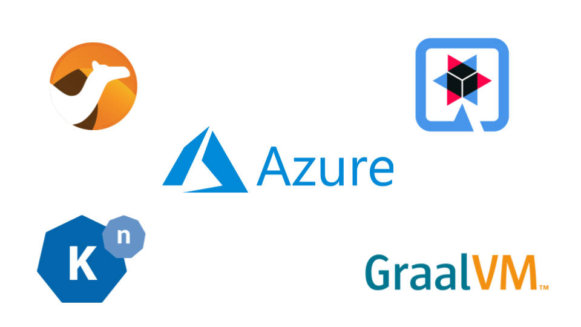

In this blog, we will take a close look on how we can deploy Camel Quarkus routes compiled natively using GraalVM Native Image generator on Azure Kubernets cluster with Knative installed. But first, we will give a brief overview about Camel, Camel Quarkus, Knative and GraalVM Native Image.
Overview
Apache Camel is a swiss knife integration engine that can be used to integrate between different components within the system using Enterprise Integration Patterns. Currently there are over 300+ components that can be used to integrate a wide range of external systems.
Apache Camel Quarkus is a runtime to run Apache Camel routes as Quarkus extensions, which as a result utilizes all the performance optimizations brought by Quarkus with GraalVM and thus, allows Camel Routes to be compiled natively using GraalVM native-image generator.
GraalVM Native Image a generator that performs AOT (Ahead-of-Time) compilation of Java code to a standalone binaries targeting the build environment that you specify. In contrast to JIT (Just-in-Time) compiler where it compiles the Java bytecode to native code during runtime, the AOT compiler will analyze and compile application classes, classes from its dependencies, runtime library classes from JDK and statically linked native code from JDK to native code during the compile time. Therefore, the resulting program will require lower footprint in terms of memory usage as well as faster startup time compared to a Java VM. The compiled binary doesn’t include the traditional Java VM, but includes a lightweight VM called “Substrate VM” which includes only the necessary components like memory management and thread scheduling.
Knative is a project that allows deploying, running and managing cloud-native applications to Kubernetes. It allows developers to focus on code instead of worrying about setting up a infrastructure. For instance, many of the complex and repetitive tasks that Kubernetes requires such as configuration managements, logging, tracing, traffic management, blue/green deployment .. etc, can be provided by Knative by facilitating other important components like Istio to accomplish these tasks.
Next, we will take a step by step approach on how we can setup our cluster in Azure Kubernetes Cloud (AKS), setting up Knative there and deploying our routes for development environment.
Setting up Azure Kubernetes Cloud (AKS)
- Create the K8s cluster using AKS great walkthrough. For the sake of our testing environment, you will need to enable HTTP application routing which allows us to access deployed Camel routes publicly. However this should be only done if you need a development environment.
- Once you have everything setup, you can access your K8s dashboard through this command:
az aks browse --resource-group camel-dev --name test
At this point, we are ready to proceed to the next step on setting up Knative on AKS cluster.
Setting up Knative on Azure Kubernetes Cloud (AKS)
For simplicity, we will only install the Serving component on Knative into our AKS cluster with Istio for our networking layer. Based on the steps mentioned here, we can summarize the important steps to setup Knative cluster:
- Install Custom Resource Definitions:
kubectl apply --filename https://github.com/knative/serving/releases/download/v0.15.0/serving-crds.yaml
- Install Serving core component:
kubectl apply --filename https://github.com/knative/serving/releases/download/v0.15.0/serving-core.yaml
- To make sure that Knative has been installed correctly in our cluster, we will need to run the following commands:
kubectl get pods --namespace knative-serving
It should report all the pods in Running status, similar to this output:
NAME READY STATUS RESTARTS AGE
activator-7fff689bcb-sc2xf 2/2 Running 5 5d23h
autoscaler-5bcff95856-jdxs6 2/2 Running 6 5d23h
controller-bbdd78bc4-sr5t6 2/2 Running 10 5d23h
istio-webhook-7578df5df5-gl5d2 2/2 Running 8 5d23h
networking-istio-8444c7c995-ksxd6 1/1 Running 2 5d23h
webhook-68bb66b676-wxgf4 2/2 Running 9 5d23h
Now we have done the basic component Knative setup, we need to install the networking layer using Istio.
Setting up Istio
Knative uses Istio as newtwork layer facilitator, which means in theory you are not bound to it. However for the sake of this blog, we will stick to Istio. To setup, we need to execute the following steps:
-
Download the latest release of Istio using this guide. You will need to make sure to have
istioctlinstalled into yourPATHvariable. -
We will install Istio using a default profile:
istioctl install --set profile=default
- We need to make sure that istio will inject Envoy sidecar automatically, therefore we need to label our namespace (change
defaultnamespace with yours) withistio-injection=enabled:
kubectl label namespace default istio-injection=enabled
- Also we will need to enable the automatic side-car injection on our
knative-servingsystem namespace:
kubectl label namespace knative-serving istio-injection=enabled
- Let’s verify everything using this command:
kubectl get pods --namespace istio-system
We should see the core pods up and running like the following, note this may be different depending on the Istio components you chose to install:
NAME READY STATUS RESTARTS AGE
grafana-74dc798895-2x5rp 1/1 Running 2 5d23h
istio-egressgateway-6b9fff7b95-dnpxn 1/1 Running 2 5d23h
istio-ingressgateway-5f5b59696c-rwkkw 1/1 Running 2 5d23h
istio-tracing-8584b4d7f9-nqncf 1/1 Running 2 5d23h
istiod-69bbcb65c-g9dfp 1/1 Running 2 5d23h
kiali-6f457f5964-jshp8 1/1 Running 2 5d23h
Configure DNS
In this blog, we would like to setup our cluster in such way that we can access our deployed Camel routes publicly for development purposes. The application URL will be in this format:
{APP_NAME}.{NAMESPACE_NAME}.{DNS_ZONE_URL}
To do this:
-
We will need to make sure to have HTTP application routing enabled in our cluster as we mentioned previously.
-
We will need to obtain the External IP for the istio ingressgateway. We can use the following command:
kubectl --namespace istio-system get service istio-ingressgateway
It will show something similar to this:
NAME TYPE CLUSTER-IP EXTERNAL-IP PORT(S) AGE
istio-ingressgateway LoadBalancer 10.0.62.123 51.663.129.394 15020:31360/TCP,80:30538/TCP,443:32235/TCP,31400:31897/TCP,15443:32677/TCP 5d23h
In the above command, note the external IP 51.663.129.394.
- In Azure Portal, by enabling HTTP application routing in Azure, it will create for us a DNS zone as well as a loadbalancer. Search for
DNS Zone. You will find a DNS Zone entry similar to this:
f54545e10oos66652.germanywestcentral.aksapp.io
This would be our suffix custom domain for the routes URLs. We will explain later how the final URL will look like.
- We need now to redirect all requests from our custom domain to our ingressgateway. By clicking on the DNS Zone entry, we will need to add a new DNS record with the following options:
Name: *
Type: A
Alias record set: No
IP Address: 51.663.129.394
This will pipeline all requests to our istio ingressgateway.
- Now we need to tell Knative about our custom domain that we just obtained previously from Azure in order to generate the correct URLs for the applications. We can do this through this command:
kubectl patch configmap/config-domain \
--namespace knative-serving \
--type merge \
--patch '{"data":{"f54545e10oos66652.germanywestcentral.aksapp.io":""}}'
After all these steps, now whenever you deploy an application to knative, the generated URL to access your application will be in this format: {APP_NAME}.{NAMESPACE_NAME}.{DNS_ZONE_URL}. For example running command kubectl get ksvc -n default should give a list of deployed applications in default namespace with the URL to access:
NAME URL LATESTCREATED LATESTREADY READY REASON
camel-quarkus-rest http://camel-quarkus-rest.default.f54545e10oos66652.germanywestcentral.aksapp.io camel-quarkus-rest-v1 camel-quarkus-rest-v1 True
Now we can move on to Camel and deploy an example route to our newly created cluster.
Building and Deploying a Camel Quarkus Route
-
As we want to build our route natively, we will first need to setup GraalVM correctly, this includes setting
native-imagegenerator. This guide has a great explanation on how to setup GraalVM correctly. -
Clone this example route and build it using
../mvnw clean package. -
Since we are targeting Knative, we will need to build our native route with
Dockerruntime set through this command:
./mvnw package -Pnative -Dquarkus.native.container-runtime=docker .
- Once our build is done, we will build our Docker image with the provided
Dockerfileusing this command, you will need exchange{USERNAME}with your Dockerhub username:
docker build -f Dockerfile.native -t {USERNAME}/camel-quarkus-rest .
- Push the generated Docker image to your Docker hub via this command, you will need to exchange
{USERNAME}with your Dockerhub username:
docker push {USERNAME}/camel-quarkus-rest.
- This example comes with a
service.ymlfile which is responsible for deploying our route to Knative. The file looks like this:
apiVersion: serving.knative.dev/v1
kind: Service
metadata:
name: camel-quarkus-rest
namespace: default
spec:
template:
metadata:
name: camel-quarkus-rest-v1
spec:
containers:
- image: docker.io/{USERNAME}/camel-quarkus-rest
traffic:
- tag: latest
latestRevision: true
percent: 100
As above, metadata block contains our route name in Knative. In spec block, we tell Knative to fetch our app from a specific docker image. However, you will need to exchange {USERNAME} with your Docker hub username. Also, notice our suffix in the metadata name camel-quarkus-rest-v1, v1 here is used for our deployment revision tagging. For example, if we deploy a v2 of this app, we will need to change revision name to camel-quarkus-rest-v2. This can be used for traffic splitting or blue/green deployment, for instance, we can tell Knative to serve 70% of the traffic with v1 and 30% of the traffic with v2 using the traffic block:
traffic:
- tag: v2
percent: 30
- tag: v1
percent: 70
There are many great ways that Knative could do this, you may refer to this documentation for more detailed explanation on how to use it.
-
Once we have
service.ymlready, we can deploy our route usingkubectl apply --filename service.yaml. -
To access our application, we run this command
kubectl get ksvc -n defaultwhich should give us the URLs for our deployed applications indefaultnamespace. It will give something like this:
NAME URL LATESTCREATED LATESTREADY READY REASON
camel-quarkus-rest http://camel-quarkus-rest.default.f54545e10oos66652.germanywestcentral.aksapp.io camel-quarkus-rest-v1 camel-quarkus-rest-v1 True
Let’s try our URL now:
curl http://camel-quarkus-rest.default.f54545e10oos66652.germanywestcentral.aksapp.io/hello\?q\=awesome%20Camel
Text is: awesome Camel%
And voilà!
Now you can deploy any Camel routes or applications with ease and utilize all the good benefits from Knative.
Monitoring
Monitoring and observability are important for any Cloud environment. Lucky, Knative includes all the needed batteries to have your monitoring environment set in just few commands.
- We need to install the core of the observability features using this command:
kubectl apply --filename https://github.com/knative/serving/releases/download/v0.15.0/monitoring-core.yaml
- Install Prometheus and Grafana for metrics:
kubectl apply --filename https://github.com/knative/serving/releases/download/v0.15.0/monitoring-metrics-prometheus.yaml
- Install the ELK stack (Elasticsearch, Logstash and Kibana) for logs:
kubectl apply --filename https://github.com/knative/serving/releases/download/v0.15.0/monitoring-logs-elasticsearch.yaml
kubectl port-forward --namespace knative-monitoring \
$(kubectl get pods --namespace knative-monitoring \
--selector=app=grafana --output=jsonpath="{.items..metadata.name}") \
3000
The Grafana UI is accessible through: http://localhost:3000.
kubectl proxy
The Kibana UI is accessible through http://localhost:8001.
You can take a look at this documentation to find a detailed guide and further information on how to install more observability features.